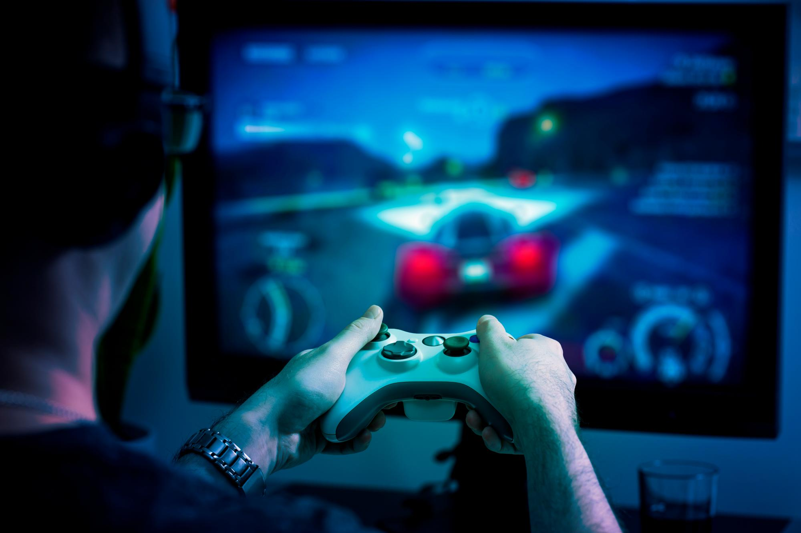
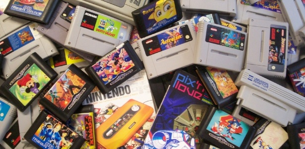
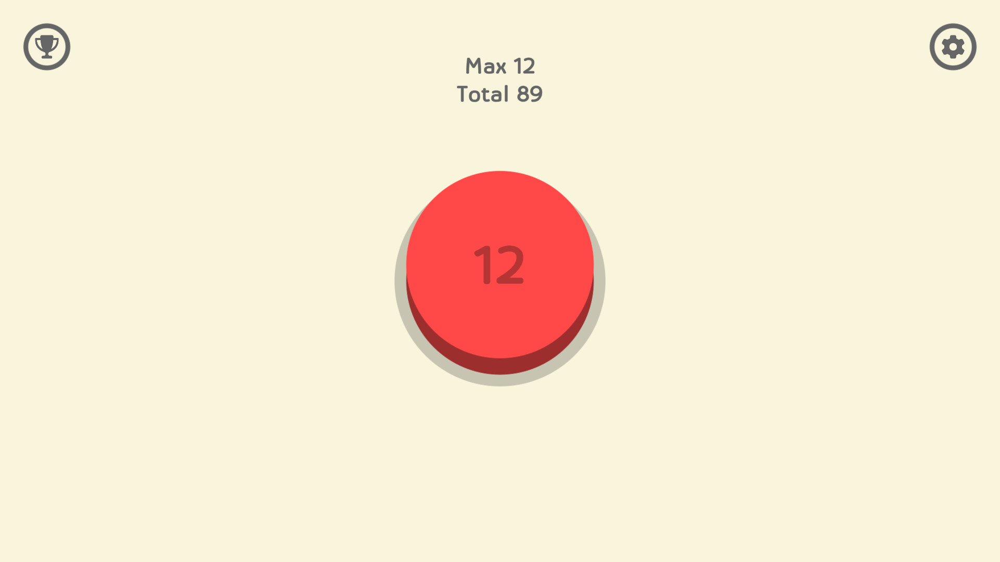

Los videojuegos son programas digitales diseñados para el entretenimiento, en los que una persona interactúa con una interfaz visual y sonora para cumplir objetivos dentro de un mundo virtual. Se juegan en computadoras, consolas, celulares o realidad virtual, y pueden incluir historias, desafíos, misiones o competencias.
¿Que son los video juegos?
Inicio de los video juegos
Los videojuegos comenzaron en los años 50 y 60 como experimentos en laboratorios, con juegos muy simples como "Tennis for Two" (1958) y "Spacewar!" (1962). El primer éxito comercial llegó con "Pong" en 1972, un juego de ping-pong creado por Atari. A partir de ahí, los videojuegos se popularizaron con consolas, arcades y computadoras, evolucionando hasta convertirse en una de las industrias de entretenimiento más grandes del mundo.
Juegos más corto y largo de la historia
The Legend of Zelda: Breath of the Wild es el juego más largo de la historia con unas horas de más de 200–300 horas para completar al 100%.

The Button es el juego más corto de las historia el cual dura literalmente un segundo.
